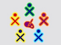
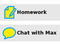
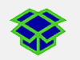

| Qu'est-ce qu'une Activité ? | Index | Lancer les Activités |
« Nous aimons à penser qu’un enfant n’a pas de contrainte – mais, lorsque les enfants semblent être joyeux et libres, cela peut tout simplement masquer le fait qu'ils agissent en fonction de buts ; nous pouvons remarquer cela facilement lorsque nous essayons de les distraire des tâches qu’ils ont choisi de faire. Pour eux, il s’agit d’explorer leurs mondes afin de découvrir ce qu'il s'y trouve, de trouver des explications sur ce qu'il s'y passe, et d’imaginer ce qu'on pourrait y trouver d'autre ; explorer, expliquer et apprendre sont les désirs les plus exigeants de l’enfance. L'envie de jouer des enfants est l’enseignant le plus exigeant que nous ayons. Jamais, dans les vies de ces enfants, ne se reproduira une telle envie d’atteindre un but. » - Marvin Minsky, The Emotion Machine
Sugar est une interface d’apprentissage qui réinvente la façon dont les ordinateurs sont utilisés à des fins éducatives. La collaboration, la réflexion et la découverte font partie intégrante de l’interface utilisateur. Sugar encourage "la pensée studio [1]" et "la pratique réflexive [2]". Grâce à la clarté de sa conception, les enfants et leurs enseignants peuvent utiliser des ordinateurs à leur façon. Les élèves peuvent reconstruire, réinventer et relancer tant ses programmes que son contenu afin de repousser les limites de leurs activités d’apprentissage. L’attention donnée par Sugar au partage, à l’argumentation et à l’exploration est basée sur la culture des programmes libres (FLOSS, Free Libre Open Source Software).
|  | Sugar facilite le partage et la collaboration.
Les enfants peuvent écrire et partager leurs documents, partager des livres et des photos, ou encore composer facilement de la musique ensemble.
|
|
Les fichiers, dossiers et applications n’existent pas sur Sugar. Les enfants interagissent à travers les Activités. Celles-ci comprennent une application, une base de données ainsi qu’un historique de l’interaction avec l’enfant. Celui-ci pourra être utilisé pour résumer et refléter le travail de l’enfant. |
|  |
Tout est automatiquement sauvegardé.
|
|
Le Journal est utilisé pour accéder aux données. Le Journal est un historique de ce qui est fait et réalisé quotidiennement. C’est à cet endroit qu’il est possible de revoir le travail fait et d’y réfléchir. |
|  |
Sugar est un logiciel libre Sugar est sous licence GNU GPL ; les mises à jour respecteront toujours la liberté des utilisateurs.
|
L’information est une question de noms. Apprendre est une question de verbes. L’interface utilisateur Sugar diffère des interfaces traditionnelles par le fait qu’elle est basée simultanément sur le constructivisme cognitif ET social. Nous croyons au fait que les élèves doivent apprendre par l’exploration et la collaboration. L’interface Sugar est basée sur trois principes humains qui sont les piliers de l’apprentissage :
Deux principes définissent l’interface Sugar :
Trois expériences caractérisent l’interface Sugar :
Partager : L’interface Sugar montre toujours la présence d’autres élèves. La collaboration est une expérience de premier ordre. Les élèves et les enseignants peuvent dialoguer, s’aider, se critiquer les uns les autres et bien sûr, partager des idées.
Refléter : Sugar utilise le Journal pour enregistrer chaque activité de l’utilisateur. Le Journal sert de lieu de réflexion et d’évaluation des progrès.
Découvrir : Sugar peut convenir à une grande variété d’utilisateurs possédant des outils différents au niveau du langage et de la lecture et ayant différents niveaux d’expérience ordinateur. Il s’agit d’une approche facile et qui n’enlève rien à l’expression personnelle : Il est possible d’enlever des couches et des couches, d’aller de plus en plus loin, sans restriction aucune.
Sugar est écrit en langage Python, langage informatique interprété facile à apprendre [3]. Ceci permet une appropriation directe des idées, quel que soit le domaine qu’explore l’élève : musique, navigation, lecture, écriture, programmation ou graphisme. Les élèves peuvent toujours aller plus loin, ils ne s’arrêteront jamais devant un mur. Ils peuvent – quelque soit leur niveau – s’engager et utiliser les mêmes outils qu’ils utilisent pour leur expression personnelle.
Tout au long de ce manuel, nous avons ajouté des notes « pour parents et enseignants » expliquant la philosophie qui est à l'origine de l’interface Sugar. Nous espérons que ces notes vous aideront à guider vos enfants et vos élèves à travers le processus d’apprentissage.
Sugar a été originellement conçu pour la fondation One Laptop per Child (OLPC), effort pour donner une éducation de qualité à chaque enfant via la distribution des portables XO, en imaginant qu’il s’agissait du plus puissant outil d’expression. Sugar est donc l’interface d’utilisateur du portable XO d’OLPC mais est maintenant disponible sur différentes distributions GNU/Linux come Fedora, Debian et Ubuntu. Quel que soit l’endroit où vous utilisez le système GNU/Linux, vous pourrez en principe lancer Sugar.
Sugar Labs est une fondation sans but lucratif dont la mission est de produire, de distribuer et de soutenir l’utilisation de l’interface Sugar. Sugar Labs soutient la communauté d’éducateurs et de développeurs de programmes qui ont créé les Activités Sugar et qui désirent leur donner plus d'audience. Sugar est un projet communautaire. Il est disponible sous la source libre GNU General Public License (GPL) et disponible pour toute personne qui aimerait l’utiliser ou le faire évoluer.
[1] La "pensée studio“ est un terme utilisé pour la description de l’enseignement des maîtres en arts visuels et ce qu’en apprennent leurs étudiants. Ce terme est détaillé dans Studio Thinking : The Real Benefits of Visual Arts Education. La pensée Studio comprend « les structures studio » : démonstrations, projets et critiques ainsi que les « habitudes d’esprit Studio » telles qu’observer, refléter, élargir et explorer, incluant des arts de toutes contrées. Dans le contexte Sugar, la pensée Studio n’est pas appliquée qu’aux arts mais à toutes les disciplines.
[2] La pratique réflexive est un concept introduit par Donald Schön dans son livre The Reflective Practititioner. La pratique réflective implique des élèves qui appliquent leurs propres expériences concrètes alors même qu’ils sont guidés par des experts dans le domaine d’études qui est le leur.
[3] Un langage interprété est un langage de programmation dont les instructions sont interprétées instantanément ( ou encore compilées par une machine virtuelle) en opposition à une pré-compilation. Les intérêts d'utiliser un langage intérprété pour l’interface Sugar sont : une indépendance d’interface, une facilité à « déboguer », un accès instantané au code source ainsi que des programmes de petite taille. Python, quant à lui, est un langage de programmation de haut-niveau et d’intérêt général. Il offre une trés bonne lisibilité de code, dispose d’une syntaxe minimaliste ainsi que d’une bibliothèque standard complète.
| Qu'est-ce qu'une Activité ? | Index | Lancer les Activités |